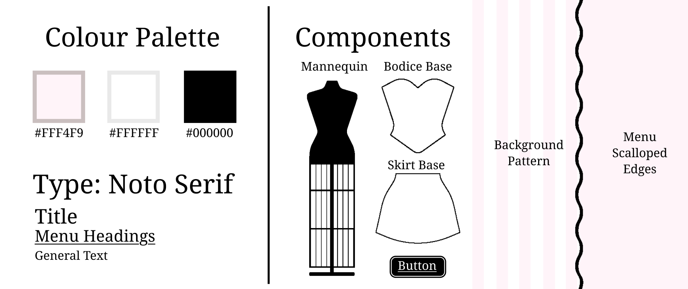
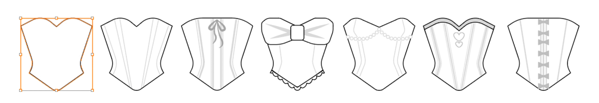

MAKE A MOCKUP
Made with: HTML • CSS • JavaScript • Adobe Illustrator
Make a Mockup! is a small interactive web game experimenting with drag-and-drop mechanics and playful visual design. Players arrange interchangeable bodice and skirt illustrations onto a central mannequin, exploring different garment combinations through a simple interface. Inspired by vintage Parisian boutiques and technical fashion pattern-drafting books, the experience combines a charming pink storefront aesthetic with minimalist, hand-drawn clothing illustrations. By focusing on simple interactions and interchangeable garment pieces, the project explores how a straightforward web-based experience can make digital dress-up both playful and engaging.

